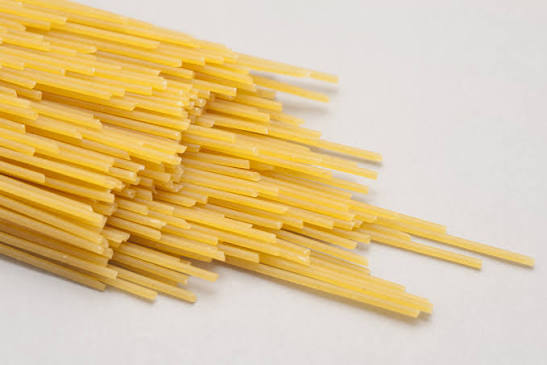

Cauliflower Pasta
Home

Description
This is vegetarian pasta recipe with cauliflower and cheese!
Ingredients
Serves 4
- 100g stale bread
- 400g cauliflower
- 400ml milk
- 1 onion
- 2 cloves of garlic
- 70g cheddar cheese
- 300g pasta
- Olive oil
Instructions
- Tear the bread into a food processor. Peel and add the garlic, then tear in any nice leaves from your cauliflower.
Add ½ a tablespoon of olive oil, blitz into fairly fine crumbs, then tip into a large non-stick frying pan on a medium heat.
Cook for 15 minutes, or until golden and crisp, stirring occasionally.
- Meanwhile, peel the onion, then roughly chop with the cauliflower, stalk and all.
- Tip the crispy crumbs into a bowl, returning the pan to the heat.
Pour in the milk and add the chopped veg, bring just to the boil, then reduce the heat to low, cover and simmer.
- Alongside, cook the pasta in a pan of boiling salted water according to the packet instructions.
- Just before the pasta is ready, carefully pour the cauliflower mixture into the processor (there’s no need to wash it),
grate in the cheese, blitz until super smooth, then season to perfection, and return to the pan. Drain the pasta, reserving a mugful of starchy cooking water.
- Toss the pasta through the sauce, loosening with a splash of reserved cooking water, if needed, then serve with the crispy crumbs, for sprinkling.